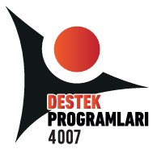

ℹ️ Proje Hakkında
Bu uygulama; NASA veri setlerini yapay zekâ ile işleyerek, Türkiye ve yerelde Bergama'nın 2050 yılına kadar karşılaşabileceği olası iklim senaryolarını bilimsel bir zaman tüneliyle modellemektedir.
Vizyonumuz: "Geçmişten Geleceğe Bilim" anlayışıyla, coğrafi verileri bilişim teknolojileriyle harmanlayarak iklim değişikliği farkındalığını yerel ölçekte somutlaştırmak.
Kapsam: 1980'den 2050'ye kadar olan 70 yıllık süreçte; sıcaklık artışları, yağış rejimindeki değişimler ve bunların sürdürülebilir yaşam üzerindeki etkileri interaktif araçlarla sunulmaktadır.

TÜBİTAK 4007 Destekli Proje

"4007 Bilim Bilim" Şenliği - Bergama
"Geçmişin verisiyle, geleceğin Bergama'sını bugün keşfedin."